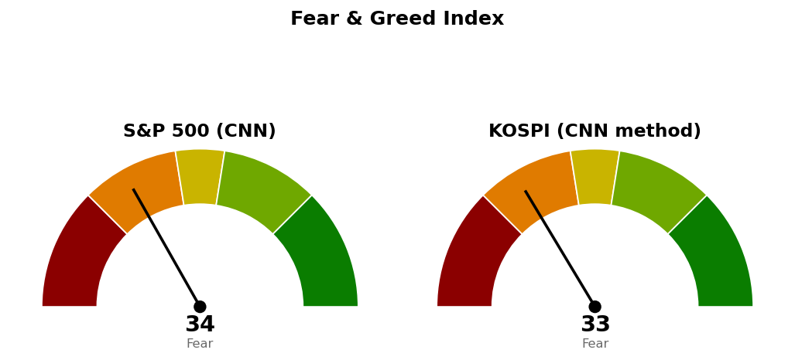

2026-10-28 장전 예측 4건: 4건 중 4건 적중(100.0%)
| 예측 | 근거 | 실제 | 판정 |
|---|---|---|---|
| 코스피 종가 5,451 상회 | 다음 지지 5,451(일봉 종가 판정) — 간밤 나스닥 +1.18%·S&P 500 +0.60%, 나스닥 100 선물 +1.26% | 종가 6,024 (+6.84%) | 적중 |
| 코스피 장중 5,730 도달 | 6번 반응한 5,730~5,816 구간 하단 — 10/27 고가 5,738이 이 구간에서 밀림, S&P 500 선물 +0.57% | 고가 6,032 | 적중 |
| KODEX 반도체, 코스피 대비 강세 마감 | 간밤 미국 기술 업종(XLK) 1일 초과수익 +1.10%p로 11개 업종 중 1위 | +8.14% 대 코스피 +6.84% | 적중 |
| KODEX 헬스케어, 코스피 대비 약세 마감 | 20일 초과수익 1위(+17.70%p)지만 간밤 미국 헬스케어(XLV) 1일 초과수익 -0.65%p | +1.11% 대 코스피 +6.84% | 적중 |
KR 최근 90일 누적 32건 중 17건 적중(53.1%) · 최근 20건 20건 중 13건 적중(65.0%)
빗나간 예측은 없습니다. 표본이 8세션 32건이라 적중률을 성과로 읽을 수 없습니다.
| 가격 | 판정 방식 | 결과 |
|---|---|---|
| 기준선 6,000 | 일봉 종가 상회 | 충족 — 종가 6,024 |
| 도착지 6,409 | 장중 고가 도달 | 진행 중 — 고가 6,032, 남은 거리 ATR의 1.59배 |
| 다음 지지 5,451 | 일봉 종가 하회 | 해당 없음 — 저가 5,746 |
| 사다리 1차 5,263 / 취소선 4,900 | 장중 저가 / 일봉 종가 | 미도달 |
기준선을 지켰으므로 "못 지키면" 갈래는 열리지 않았고, 장중 저가는 5,746이었습니다. 직전 계획은 상방 갈래로 살아 있으며 도착지 6,409·사다리 1차 5,263·취소선 4,900은 직전과 같습니다. 기준선은 6,000에서 6,032로, 다음 지지는 5,451에서 5,773으로 옮겼습니다 — 6,000이 충족됐고, 종가가 20일선 6,032(오늘 고가와 같은 자리) 8포인트 아래에서 끝났으며, 장중 5,773 구간을 내려갔다 되찾은 새 반응이 생겼기 때문입니다. 직전 브리핑이 적은 10/27 종가 5,626은 확정 종가 5,638과 12포인트 달랐습니다.
기준선은 한 세션 안에 닿는 거리입니다. 6,032~6,409 사이에는 6,200 라운드와 일봉 23.6% 되돌림선 6,236 외에 반응이 쌓인 가격이 없고, 200일선 6,473은 도착지 위에 있습니다. 5,773을 종가로 잃으면 그 아래 반응이 쌓인 가격은 5,400~5,451 구간(5,422)입니다. 경로를 말할 근거가 없어 방향은 말하지 않고 기준선과 두 갈래만 냅니다. 오늘 밤 나스닥은 기준선 26,600 아래 26,478, S&P 500은 다음 지지 7,701 위 7,723에서 대기 중이라, 코스피 10/29 시가는 그 결과에 선행 종속됩니다.
등록된 ETF 스윙 계획이 없습니다. 지수가 200일선 아래(6,473 대비 -6.94%, 10/13부터)라 이번에는 ETF 스윙 계획을 내지 않습니다.
한국 섹터는 테마형 ETF 기준이라 미국 업종 ETF와 성격이 다릅니다. 상위 2개는 직전과 같은 2차전지·헬스케어(순서만 바뀜)이며, 국면 때문에 두 ETF 모두 스윙 계획 대상에서 빠졌습니다. 코스피가 +6.84% 오른 날 지수를 이긴 섹터는 반도체(+1.31%p) 하나였고, 조선(-7.30%p)·헬스케어(-5.73%p)가 가장 약했습니다. 미국은 에너지(+10.16%p)·유틸리티(+7.23%p)가 20일 상위, 커뮤니케이션(-7.75%p)·기술(-3.25%p)이 하위입니다.
종목 발굴: 코스피가 200일선 아래라 오늘 한국 후보는 나오지 않았고, 발굴 리포트도 나가지 않습니다.

S&P 500은 CNN 공식값이며 안전자산 수요 14.6·시장 폭 27.8이 가장 낮고 변동성 50.0이 가장 높습니다. 코스피는 CNN 방식을 한국 데이터로 재구성한 값(공식 지수 아님, 7개 항목 모두 사용)이고, 10/27 기준입니다. 모멘텀 4.4·안전자산 수요 9.6이 점수를 끌어내렸고 풋/콜 81.2가 끌어올렸습니다. 오늘 +6.84% 상승은 아직 반영되지 않았습니다.
1. 지수 사다리: 이번엔 살 자리가 없습니다. 사다리 1차 5,263 장중 도달 시 계좌의 2% 분할 매수, 4,900 일봉 종가 이탈 시 남은 회차 중단·산 회차는 다음 세션 전량 매도 (사다리 취소). 2. ETF 스윙: 진입 중인 계획 없음, 새 계획 없음. 3. 상방: 일봉 종가 6,032 상회 시 도착지 6,409까지 열립니다. 하방: 일봉 종가 5,773 하회 시 다음 반응 구간 5,400~5,451을 봅니다.
다음 세션에 볼 것: 10/29 코스피 종가가 20일선 6,032 위인지.
ATR(하루 평균 변동폭): 최근 14일 동안 하루에 오르내린 폭의 평균.
상대강도지수(RSI): 최근 14일 오른 폭과 내린 폭의 비율을 0~100으로 나타낸 값.
20일 초과수익: 최근 20거래일 수익률에서 기준 지수 수익률을 뺀 값.
20일선·50일선: 최근 가격에 무게를 더 둔 지수이동평균.
200일선: 최근 200거래일 종가의 단순 평균.